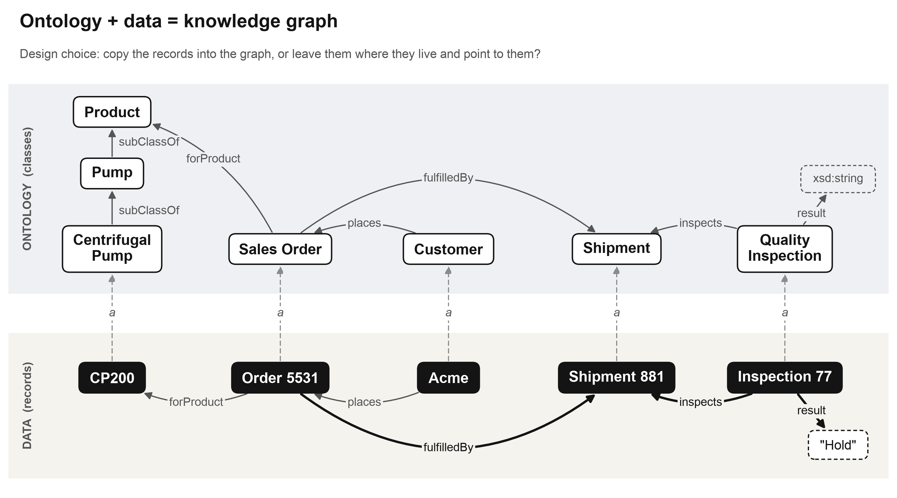

AI in the enterprise. What is working, what is next and where you fit.

PE firms, the Big 4, Bain and McKinsey are all in on AI disruption. "We can't do that" gets you exited.
Aggressive use that fits your company's culture and responsibilities.
A daily working relationship with Claude or GPT. You can't disrupt with a tool you don't know.
The model doesn't know your value chain or your jargon. You do.
Data engineering, data science, advanced stats. Syntax used to stop you. It doesn't now.
Hypothesize, build, test and iterate in a week.
Business analyst, requirements gatherer, QA tester. No apologies.
Then ask why your team hands anything else to anyone.